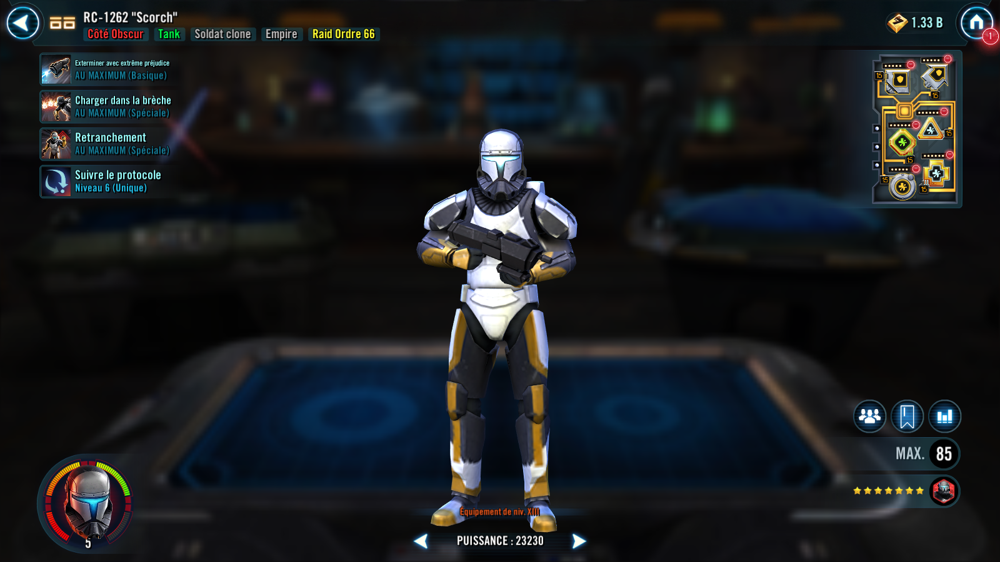
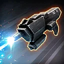
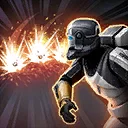

RC-1262 "Scorch"
Durable and dedicated to following orders, Scorch is a sturdy Dark Side Clone Trooper Tank
Durable and dedicated to following orders, Scorch is a sturdy Dark Side Clone Trooper Tank


Deal Physical damage to target enemy and dispel all debuffs on a random debuffed Empire ally. If the target enemy had Order 66, reduce the cooldowns of a random, other non-Galactic Legend Empire ally by 1.

Deal Physical damage to all enemies, inflict 2 stacks of Damage Over Time for 2 turns, and Off Balance for 2 turns, which can't be copied.
Scorch Taunts for 2 turns, recovers 25% Health and Protection, and gains 5 stacks of Bulwark for 2 turns, which can't be copied. At the start of battle, if there is an ally Lord Vader or Grand Moff Tarkin in the leader slot and not in the ally slot, Bulwark can't be copied, dispelled, or prevented.
Dark Side Clone Trooper allies gain Protection Up (25%) for 2 turns.
Bulwark: +150% Defense per stack; lose one stack of Bulwark when receiving damage
At the start of each encounter, Scorch Taunts for 2 turns, and if there are no enemy Galactic Legends, inflict 2 stacks of Damage Over Time on all enemies for 2 turns, which can't be dispelled, evaded, or resisted.
While Scorch is Taunting, he has +25% Defense and Tenacity. Whenever he loses Taunt, he gains 25% bonus Protection for 2 turns.
While he has Bulwark, he is immune to Speed Down, Stagger, and Stun.
Whenever an enemy dispels Taunt from Scorch, they are inflicted with Order 66 for 2 turns, which can't be copied, dispelled, or resisted. If that enemy was a Jedi, Order 66 instead lasts for 4 turns.
Whenever a stack of Damage Over Time inflicted by Scorch expires, he gains 10% bonus Protection for 2 turns.
At the start of battle, if there is an ally Grand Moff Tarkin, Grand Moff Tarkin gains 200% Potency, Scorch assists whenever Tarkin uses an ability, and the first time Tarkin would be defeated, he instead gains Deflective Ward for 2 turns or until he receives damage, which can't be copied, dispelled, or prevented, and recovers 50% Health and Protection.
Omicron Boost : While in Grand Arenas: Scorch gains 50% Max Health, Max Protection, and Tenacity.
Whenever he loses Taunt, all Dark Side Clone Trooper allies recover 15% Health and Protection. Whenever he gains Taunt, he dispels all debuffs on himself and all other Dark Side Clone Trooper allies gain 10% Turn Meter. Whenever he uses Entrenched, he gains an additional 5 stacks of Bulwark.
The first time each other non-Galactic Legend Empire ally is reduced to 50% Health, Scorch Taunts for 2 turns and that ally recovers 100% Health and Protection.